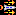
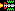
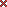
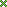

Star Fighter 3000 Pilot's Manual
Contents / Previous
Chapter / Next Chapter
Note that most key controls and the action of mouse or joystick
buttons may be redefined from the defaults listed here.
Keyboard
-
| Z |
- Roll left |
| X |
- Roll right |
| ' |
- Dive |
| / |
- Climb |
| 'Return' |
- Fire selected weapon |
| 'Right Alt' |
- Thrust |
Mouse
-
| Mouse Left |
- Roll left |
| Mouse Right |
- Roll right |
| Mouse Up |
- Dive |
| Mouse Down |
- Climb |
| Left Button |
- Thrust |
| Middle Button |
- Cycle through weapons:
- Lasers
- Air to ground missiles
- Air to air missiles
... and any super weapons
|
| Right Button |
- Fire selected weapon |
Joystick
-
| Joystick Left |
- Roll left |
| Joystick Right |
- Roll right |
| Joystick Up |
- Dive |
| Joystick Down |
- Climb |
| Button 1 |
- Fire selected weapon |
| Button 2 |
- Thrust |
| Button 3 |
- Cycle weapons (as above) |
-
| S |
- View ship status |
| M |
- View map |
| E |
- Release ECM |
| P |
- Pause game |
| R |
- Re-group your formation |
| A |
- Break formation for attack |
| T |
- Toggle head-up display |
| 'Escape' |
- Quit game and return to the main menu |
| f12 |
- Return to desktop or lose input focus |
-
| f1 |
- Lasers |
| f2 |
- Air to ground missiles |
| f3 |
- Air to air missiles |
| f4 |
- Cycle through super weapons:
- Freefall cluster bombs
- Wide area lasers
- Multiple A-T-A missiles
- Aerial mines
|
-
| f5 |
- Reset normal view |
| f6 |
- Tracking camera |
-
| f9 |
- Reset view to player |
| f10 |
- Cycle through view types:
- Player
- Friendly spacecraft
- Enemy spacecraft
- Player weapons
|
| f11 |
- View next instance of type |
-
| 'Up Arrow' |
- Forward view |
|
- (+ Right Ctrl for up) |
| 'Down Arrow' |
- Rear view |
|
- (+ Right Ctrl for down) |
| 'Left Arrow' |
- Camera left |
| 'Right Arrow' |
- Camera right |
| 'Page Up' |
- Zoom camera in |
| 'Page Down' |
- Zoom camera out |
During gameplay, the following information is shown on
screen:
- Score
- Shown on top left.
- Shields
-
| - Green |
|
Shows shields power out of total (red). |
| - Orange |
|
Shows ship is under attack. |
| - Flashing |
|
Ship is damaged and repairing. |
- Speed
- Sliding speed indicator shown over shields:
- Current Weapon
- Shown on top right + quantity:
|
Laser |
|
A-T-G missile |
|
A-T-A missile |
|
Freefall cluster bomb |
 |
Wide area laser |
|  |
Multiple A-T-A missile |
|
Aerial mine |
- E-C-M
- Shown on top middle, if present:

- Direction + Grid Ref:
- Shown on top right:
- Formation Grid
- Only displayed when friendly troops are in formation. This
displays all ships and their relative positions:

- Distant ships
- Shown as a cross, colour indicates type:
| - Red |
 |
Enemy ship |
| - Green |
 |
Friendly ship |
| - White |
|
Missile / Unclassified |
| - Orange |
|
Credit |
Contents /
Previous Chapter / Next Chapter